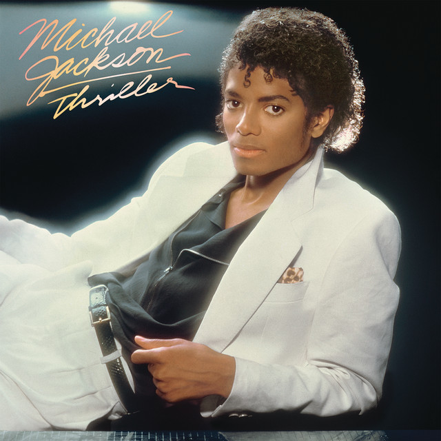
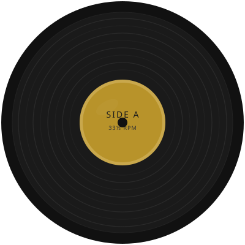
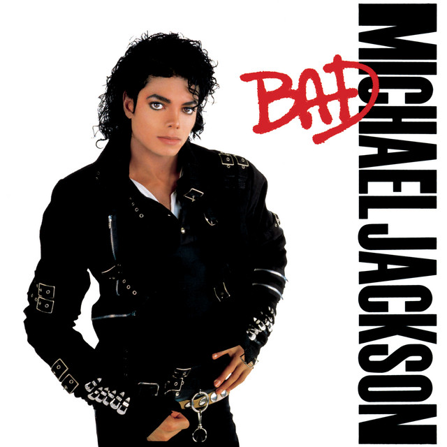

Trayectoria
Historia
Michael Joseph Jackson nació el 29 de agosto de 1958 en Gary, Indiana. Desde los cinco años actuó junto a sus hermanos en el grupo The Jackson 5, demostrando un carisma y una destreza vocal que dejaban sin aliento a quienes lo veían. Motown Records los contrató en 1969, y el pequeño Michael se convirtió rápidamente en el imán de miradas de la banda.
En 1979, con el álbum Off the Wall producido por Quincy Jones, inició su era como solista adulto. Cuatro años después llegó Thriller (1982), el disco más vendido de todos los tiempos con más de 70 millones de copias. Su videoclip homónimo, dirigido por John Landis, redefiniría para siempre el formato del vídeo musical.
Innovó en la danza con movimientos únicos como el Moonwalk, presentado al mundo en 1983 durante la celebración de los 25 años de Motown. Sus actuaciones en vivo combinaban pirotecnia, coreografías precisas y una conexión emocional con el público que pocos artistas han podido igualar.
Michael Jackson falleció el 25 de junio de 2009, pero su legado permanece vivo. Ganó 13 Grammys en una sola noche (1984), acumuló 13 sencillos número uno en Estados Unidos y es reconocido universalmente como el artista más influyente de la historia de la música popular.
Discografía
Álbumes


Thriller
1982

Bad
1987

Dangerous
1991
Videografía